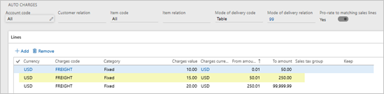

Kopfzuschläge auf entsprechende Bestellpositionen aufteilen
Important
Dynamics 365 Retail ist jetzt Dynamics 365 Commerce und bietet umfassende Handelsfunktionen für alle Kanäle – von E-Commerce über Shops bis hin zu Callcentern. Weitere Informationen zu diesen Änderungen finden Sie unter Microsoft Dynamics 365 Commerce.
In diesem Thema werden die Funktionen für Auto-Belastungen auf Gruppierungskopfebene und deren Aufteilung auf Handelsverkaufspositionen beschrieben. Diese Funktionen sind für Transaktionen verfügbar, die an der Verkaufsstelle in der Retail-Version 10.0.1 erstellt werden, und für Verkäufe, die in einem Callcenter in der Retail-Version 10.0. erstellt werden.
Diese Funktion ist nur verfügbar, wenn die Funktion erweiterte Auto-Belastungen aktiviert ist, indem Sie die Option Handelsparameter auf der Seite verwenden. Außerdem kann die Berechnungsmethode für erweiterte Auto-Belastungen nur auf Handelsverkaufsaufträge angewendet werden, die über Handelskanäle erstellt wurden (am POS, über ein Callcenter und über die Dynamics-E-Commerce-Plattform).
Diese neuen Funktionen geben Organisationen mehr Flexibilität, indem Auto-Belastungen auf Kopfebene berechnet und auf Handelsverkaufsbuchungen angewendet werden.
In älteren Versionen der App vor Version 10.0.1 werden Auto-Belastungen auf Kopfebene, die eine bestimmte Lieferartbeziehung haben, nur berechnet, wenn eine Übereinstimmung mit der Lieferart vorliegt, die im Auftragskopf definiert ist.
Beispielsweise werden Auto-Belastungen auf Kopfebene für die Lieferarten 99 und 11 definiert. Ein Auftrag wird erstellt und Lieferart 99 wird im Auftragskopf definiert. Einige der Verkaufspositionen werden jedoch so eingerichtet, dass sie mit Lieferart 11 geliefert werden. In diesem Fall werden nur die Belastungen auf Kopfebene, die mit der Lieferart 99 verknüpft sind, für den Auftrag übernommen und berücksichtigt.
In Commerce haben die Belastungen auf Kopfebene eine zusätzliche Funktion, mit der Sie eine Konfiguration abgestufter Gebühren festlegen können, die auf dem Auftragswert basiert. Wenn beispielsweise der Auftragswert zwischen €50,00 und €200,00 liegt, sollte eine Organisation Frachtkosten von €5,00 berechnen. Wenn der Auftragswert zwischen €200,01 und €500,00 liegt, könnten die Frachtkosten bei €4,00 liegen.
Einige Organisationen möchten die Vorteile der abgestuften Zuschlagsberechnung nutzen, die mit Belastungen auf Kopfebene bereitgestellt werden. In Szenarios mit gemischten Liefermodi sollte auch sichergetsllt werden, ob Belastungen, die berechnet wurden, auf der Übereinstimmung mit der Lieferart basieren, die für die einzelnen Auftragspositionen definiert ist.
Sie können nun Auto-Belastungen auf Kopfebene konfigurieren, sodass alle Lieferarten im Auftrag berücksichtigt werden, wenn Belastungen berechnet werden. Diese Funktionen erfordern eine komplexere Berechnungslogik zur Berechnung der Belastungen auf Kopfebene. Die Logik gruppiert alle Artikel, die geliefert werden, indem die gleiche Lieferart verwendet wird, und sie behandelt die Gruppe als Gruppe Berechnungsgruppe für die Artikel, wenn diese die Auto-Belastungen auf Kopfebene berechnet. Für Artikel, die dieselbe Lieferart haben, werden Auto-Belastungen auf Grundlage des kombinierten Verkaufswerts der Artikel berechnet. Auf diese Weise wird die entsprechende Auto-Belastungsebene bestimmt.
Nachdem die entsprechenden Belastungen auf Kopfebene für die Verkaufspositionen empfangen wurden, die mit derselben Lieferart versendet werden, werden dann die berechneten Belastungen auf die Verkaufspositionsebene aufgeteilt. Da diese Zuschläge auf Positionsebene sind und nicht auf Kopfebene verbleiben, wird eine spezifischere Verknüpfung zwischen dem Artikel und dem Belastungswert vorgenommen, der berechnet wurde. Dieses Verhalten kann in den Teilrücklieferungsszenarien hilfreich sein, wenn eine Organisation nur einen Teil des Zuschlags anstelle des gesamten Zuschlags erstatten möchte, wenn nur wenige Artikel zurückgegeben werden.
Szenarien
Die folgenden beiden Beispielszenarien verdeutlichen, wie diese Zuschläge berechnet werden, wenn die neue Funktion verwendet und wenn sie nicht verwendet wird.
Szenario 1
Dieses Szenario definiert das Verhalten, wenn die Option Kopfzuschläge auf entsprechende Bestellpositionen aufteilen in der Auto-Belastung auf Nein festgelegt wird. (Das Verhalten entspricht dem Verhalten der Belastungen auf Kopfebene in den App-Versionen vor Version 10.0.1.)
In diesem Szenario hat die Organisation Belastungen auf Kopfebene für die Lieferartbeziehung 99 und Lieferartbeziehung 11 definiert. Es sind keine Auto-Belastungen für Lieferart 21 definiert.
Ein Auftrag wird im Callcenter erstellt, und die Lieferart wird auf 99 festgelegt. Dieser Auftrag enthält fünf Artikel. Zwei Auftragspositionen wurde konfiguriert, um Lieferart 99 zu verwenden, zwei Positionen wurden konfiguriert, um Lieferart 11 zu verwenden, und eine Position wurde konfiguriert, um Lieferart 21 zu verwenden, wie in der folgenden Tabelle dargestellt.
| Artikel | Positionsmenge | Liefermodus | Preis pro Einheit |
|---|---|---|---|
| 81331 | 1 | 11 | $10 |
| 81332 | 1 | 99 | $50 |
| 81333 | 2 | 11 | $30 |
| 81334 | 3 | 99 | $10 |
| 81334 | 3 | 21 | $5 |
In diesem Szenario wird der gesamte Auftrag mit der Auto-Belastungstabelle für Lieferart 99 ausgewertet. Die vollständige Summe aller Verkaufspositionen wird verwendet, um eine entsprechende Stufe in der Auto-Belastungskonfiguration zu bestimmen, und diese Belastung wird auf Auftragskopfebene angewendet. In diesem Beispiel ist die Gesamtsumme der Bestellungen $165,00 und die Frachtkosten $15,00 werden auf den Auftragskopf angewendet. Auto-Belastungen, die für Lieferart 11 konfiguriert wurden, werden nie referenziert oder angewendet.
In diesem Szenario wird bei einer Rücksendung einiger Artikel des Auftrags und bei der Konfiguration des Belastungscodes für die Rückerstattung die gesamte Belastung auf Kopfebene systematisch auf die Rückerstattung, wenn nur einige Artikel zurückgegeben werden.
Szenario 2
In diesem Szenario sind Belastungen auf Kopfebene für die Lieferartbeziehung 99 und Lieferartbeziehung 11 definiert. Allerdings wird die Option Kopfzuschläge auf entsprechende Bestellpositionen aufteilen für diese Auto-Belastungstabellen auf Ja festgelegt.
Dieses Szenario verwendet denselben Auftrag, der fünf Positionen enthält. Die Lieferart im Auftragskopf wird auf 99 festgelegt, aber die Lieferart für jeden Artikel im Auftrag wird wie in der nachstehenden Tabelle gezeigt konfiguriert.
| Artikel | Positionsmenge | Liefermodus | Preis pro Einheit |
|---|---|---|---|
| 81331 | 1 | 11 | $10 |
| 81332 | 1 | 99 | $50 |
| 81333 | 2 | 11 | $30 |
| 81334 | 3 | 99 | $10 |
| 81334 | 3 | 21 | $5 |
Da die Auto-Belastungskonfiguration festgelegt wird, um die entsprechenden Verkaufspositionen zu verrechnen, führt das System die folgenden Berechnungsschritte aus.
Alle Artikel, die dieselbe Lieferart haben, werden gruppiert und das System berechnet den gesamten Produktwert der Artikel in der Gruppe.
Liefermodus 11
- Artikel 81331, Menge 1 = $10
- Artikel 81333, Menge 2 = $60 Netto ($30 pro Einheit)
- Gesamtproduktwert für Liefermodus 11 = $70
Liefermodus 99
- Artikel 81332, Menge 1 = $50
- Artikel 81334, Menge 3 = $30 Netto
- Gesamtproduktwert für Liefermodus 99 = $80
Liefermodus 21
- Artikel 81334, Menge 3 = $15 Netto
- Gesamtproduktwert für Liefermodus 21 = $15
Das System sucht nach der Konfiguration für Auto-Belastungen auf Kopfebene, die mit dem Debitor und den Lieferarteinstellungen für jede einzelne Artikelgruppe übereinstimmen. Wenn die Konfiguration gefunden wurde, sucht das System in der abgestuften Konfiguration nach der Belastung, die angewendet werden soll, basierend auf dem gesamten Produktwert von Artikeln in der Lieferartgruppe.
Liefermodus 11
- Gesamt-Handelsproduktwert = $70
- Belastungswert = $7
Liefermodus 99
- Gesamt-Handelsproduktwert = $80
- Belastungswert = $15
Liefermodus 21
- Gesamt-Handelsproduktwert = $15
- Belastungswert = $0 (Keine Auto-Belastungen sind für diese Kombination aus Debitor und die Lieferart konfiguriert.)


Das System berechnet den Belastungswert, der auf jede Position angewendet werden soll, basierend auf der Verrechnungslogik, die den proportionalen Wert der Position im Verhältnis zum gesamten Produktwert der Gruppe berücksichtigt.
Liefermodus 11
- Belastungswert = $7
- Gruppenproduktwert = $70
- Position 1-Wert = $10 (= 14,2857 Prozent des Gruppenwerts)
- Position 3-Wert = $60 (= 85,7143 Prozent des Gruppenwerts)
- Positionsbelastung für Position 1 = $1
- Positionsbelastung für Position 3 = $6
Liefermodus 99
- Belastungswert = $15
- Gruppenproduktwert = $80
- Position 2-Wert = $50 (= 62,5 Prozent des Gruppenwerts)
- Position 4-Wert = $30 (= 37,5 Prozent des Gruppenwerts)
- Positionsbelastung für Position 2 = $9,38
- Positionsbelastung für Position 4 = $5,62
Liefermodus 21
- Belastungswert = $0
- Gruppenproduktwert = $15
- Position 5-Wert = $15 (= 100 Prozent des Gruppenwerts)
- Positionsbelastung für Position 5 = $0
Daher wird für dieses Beispiel Artikel 81334 eine Frachtkostenbelastung von $5,62 zugewiesen. Diese Belastungen können Sie auf der Seite Belastungen verwalten für die Auftragsposition anzeigen. Die folgende Abbildung zeigt, wie die Seite für Artikel 81334 aussieht.

Wenn diese Berechnungsmethode in einem teilweisen Rückerstattungsszenario verwendet wird und der Belastungscode rückvergütbar ist, wird nur der Teil der Belastung, der dieser Position zugewiesen ist, erstattet, wenn der Artikel zurückgegeben wird.
Zusätzliche Ressourcen
Erweiterte automatische Omni-Channel-Belastungen
Automatische Belastungen nach Kanal aktivieren und konfigurieren